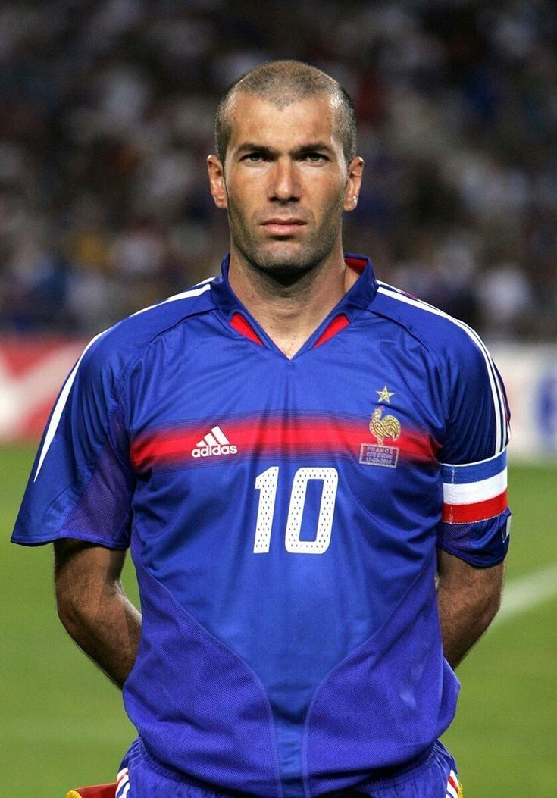
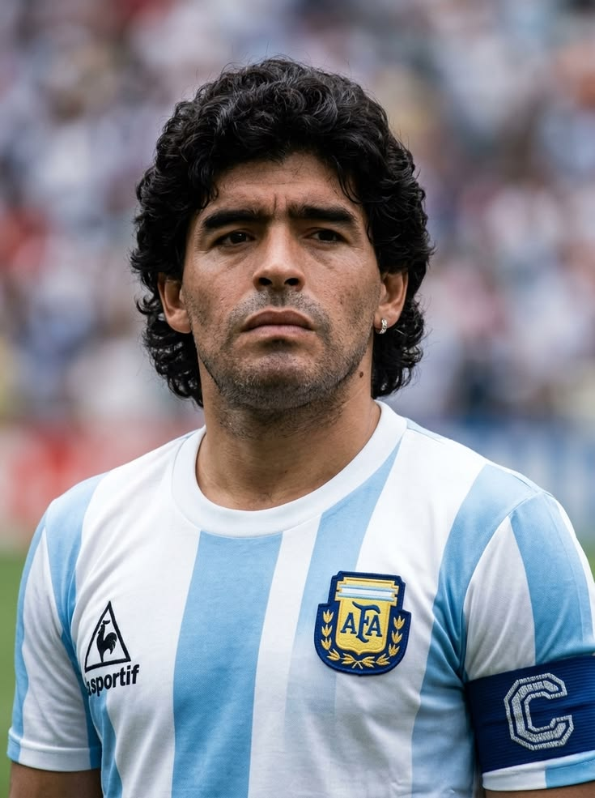
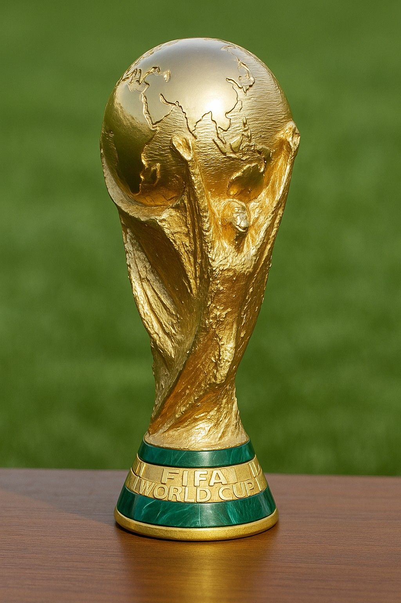
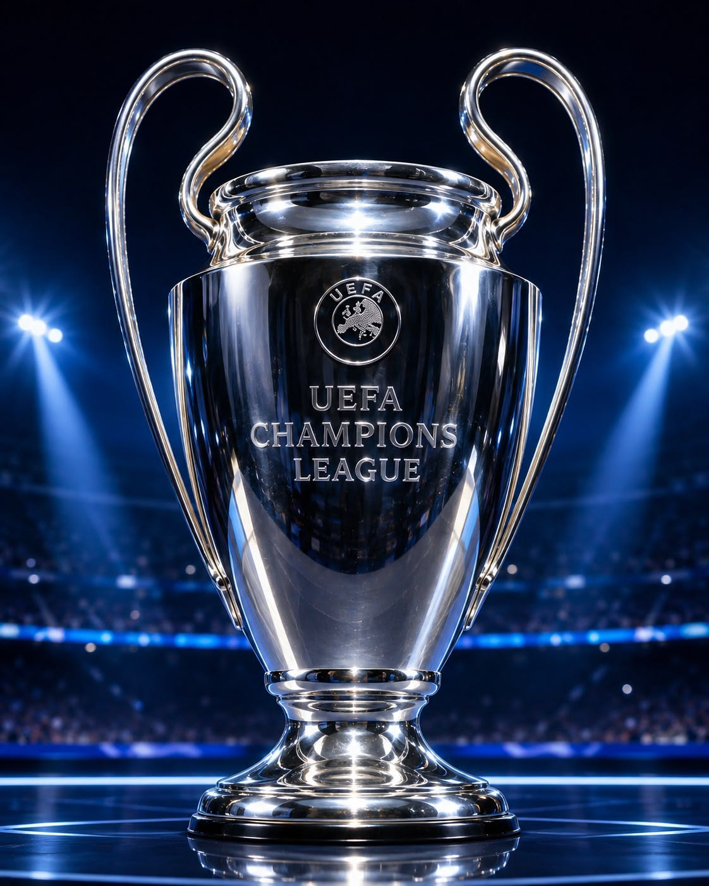

Топ футболистов
Список лучших футболистов
Футбол — один из самых популярных видов спорта в мире. Игры с мячом существовали ещё в древности, однако современный футбол начал формироваться в Англии в XIX веке. В 1863 году была создана Футбольная ассоциация Англии, которая установила единые правила игры. После этого футбол стал быстро распространяться по Европе и другим странам мира.
В 1904 году была основана Международная федерация футбола — FIFA. Первый чемпионат мира прошёл в 1930 году в Уругвае, и победителем стала сборная Уругвая. Со временем футбол превратился в глобальный вид спорта с профессиональными клубами, национальными чемпионатами и международными турнирами. Сегодня крупнейшие соревнования, такие как чемпионат мира и Лига чемпионов, смотрят миллионы людей по всему миру.

Зинедин Зидан — французский футболист и тренер алжирского происхождения, родившийся в 1972 году. Он выступал на позиции полузащитника за «Ювентус», «Реал Мадрид» и сборную Франции. Зидан стал чемпионом мира в 1998 году и чемпионом Европы в 2000 году, а также получил «Золотой мяч» в 1998 году. После завершения карьеры он стал успешным тренером и трижды подряд выиграл Лигу чемпионов с «Реалом».

Диего Марадона — легендарный аргентинский футболист, родившийся в 1960 году. Он прославился благодаря выдающейся технике, дриблингу и способности практически в одиночку решать исход матчей. Главным достижением Марадоны стала победа сборной Аргентины на чемпионате мира 1986 года, где он был капитаном команды. Особенно известны его два гола в матче против Англии — «Рука Бога» и знаменитый «Гол столетия».

Роналдо Назарио, также известный как «Зубастик», — легендарный бразильский футболист, родившийся в 1976 году. Он играл на позиции нападающего и выступал за такие клубы, как «Барселона», «Интер», «Реал Мадрид» и «Милан». Роналдо дважды становился чемпионом мира со сборной Бразилии — в 1994 и 2002 годах, а в 2002 году стал лучшим бомбардиром чемпионата мира. Он также дважды получал «Золотой мяч» и считается одним из самых сильных и техничных нападающих в истории футбола.

Кубок чемпионата мира FIFA — главный трофей мирового футбола, который получает сборная, победившая на чемпионате мира. Современный кубок используется с 1974 года и изготовлен из золота. Чемпионат мира проводится раз в четыре года и собирает сильнейшие национальные сборные со всего мира, поэтому победа в нём считается одним из самых престижных достижений в футболе.

Кубок Лиги чемпионов УЕФА — трофей, который вручается победителю главного европейского клубного турнира. За него соревнуются сильнейшие футбольные клубы Европы. Кубок легко узнать по большим ручкам, из-за которых его иногда называют «ушастым». Победа в Лиге чемпионов считается одним из высших достижений для европейского футбольного клуба.

Золотой мяч — ежегодная индивидуальная награда, которая вручается одному из лучших футболистов мира. Она была учреждена французским журналом France Football в 1956 году. При выборе победителя учитываются выступления футболиста, его достижения и вклад в успехи команды. «Золотой мяч» считается одной из самых престижных личных наград в профессиональном футболе.
За всю историю футбола было установлено множество уникальных рекордов. Некоторые из них связаны с чемпионатами мира, другие — с выдающимися достижениями отдельных футболистов и национальных сборных.